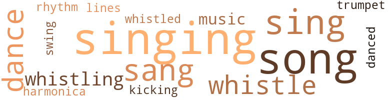
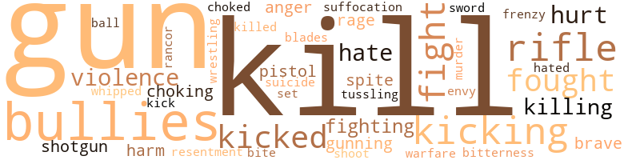

A Man Ain't Nothin' But a Man: The Adventures of John Henry, by Killens, John Oliver (1975)
71 music-related terms matched in this text.
Most frequent terms in this topic: singing (15); song (12); sing (9); sang (7); dance (5)
cornet.n.01
Definition: a brass musical instrument with a brilliant tone; has a narrow tube and a flared bell and is played by means of valves
| word | sentence |
|---|---|
| trumpet | Within his soul a trumpet had sounded , and from that night on , that familiar faraway look took up housekeeping in his eyes like he was listening to something nobody else was capable of hearing , for the sound was meant for him alone . |
dance.n.01
Definition: an artistic form of nonverbal communication
| word | sentence |
|---|---|
| dances | The woods on both sides of the long dark lonely highway took on shadowy shapes of things alive and dancing wild and crazy dances . |
dance.v.03
Definition: skip, leap, or move up and down or sideways
| word | sentence |
|---|---|
| dance | One Saturday after knocking-off time , John Henry bought a secondhand gramophone and brought it home to Polly , and some nights after the preacher and Uncle Buddy left , they would dance by the music , till their legs got tired and their bodies overflowed with wanting love . |
| dance | He started to sing and he picked her up in his arms and started to move and dance about the room with her . |
| dance | After the boarders had left , he had begun to sing and took her up into his arms and began to dance around the room with her . |
| dance | " This little devil loves to dance , and he dance good too , just like his daddy . " |
| dance | " This little devil loves to dance , and he dance good too , just like his daddy . " |
| danced | He danced and pranced and Mr. Ben said , " It 's my duty to keep you from going , John Henry . |
harmonica.n.01
Definition: a small rectangular free-reed instrument having a row of free reeds set back in air holes and played by blowing into the desired hole
| word | sentence |
|---|---|
| harmonica | Li ' l George took a harmonica out of his pocket and blew a few notes . |
kick.v.04
Definition: kick a leg up
| word | sentence |
|---|---|
| kicking | He warded off the blow with his right hand like he was waving at a bothersome mosquito , and smilingly he picked George up by the seat of his britches and with his other hand he picked up the bale of cotton and put it on his back and walked across the gangplank toward the barge with the little man kicking and shouting and cussing . |
music.n.01
Definition: an artistic form of auditory communication incorporating instrumental or vocal tones in a structured and continuous manner
| word | sentence |
|---|---|
| music | One Saturday after knocking-off time , John Henry bought a secondhand gramophone and brought it home to Polly , and some nights after the preacher and Uncle Buddy left , they would dance by the music , till their legs got tired and their bodies overflowed with wanting love . |
| music | A silence fell between them , and John Henry could hear more clearly now the racket of the crickets and the hoot owls and the music of the honking frogs . |
rhythm.n.04
Definition: the arrangement of spoken words alternating stressed and unstressed elements
| word | sentence |
|---|---|
| rhythm | They sang a work song and they worked in rhythm with the song they sang . |
sing.v.02
Definition: produce tones with the voice
| word | sentence |
|---|---|
| sing | John Henry began to sing softly , very softly . |
| sing | John Henry began to sing as he swung his hammer over his shoulder and down again and as Uncle Buddy trotted up the railroad ahead of him putting down the spikes . |
| sing | One of the men began to sing a song and the others joined in - even finally John Henry , smiling almost against his will . |
| sang | One night following a great steel-driving contest after work , John Henry had come with the men , ate with them , sang with them , and did his reading after they left . |
| sing | He started to sing and he picked her up in his arms and started to move and dance about the room with her . |
| sang | He sang a couple of verses with her in his arms and stopped and let her down and held her close to him , and she started to laugh and both of them stood there in each other 's arms laughing away . |
| sing | He would work here in this place till this mountain was completely conquered - he thought about an old Black spiritual they used to sing back on the old plantation when he was a boy : then he would lay down his sword and shield and study war no more . |
| sang | Swinga like mine , Boys Swinga like mine And they all knew that he sang the truth . |
| singing | When John Henry had first come to Big Betid , the men would come home of a summer evening from a hard day 's work , singing their work songs , lustily and robust . |
| sing | After the boarders had left , he had begun to sing and took her up into his arms and began to dance around the room with her . |
| sing | There was a sweet taste in his mouth as John Henry strode his long easy strides toward the east , where the big gate to the outside world was waiting and where the sun was still getting up in all its Great God A'mighty glory of blue and red and pinkish colors to set the entire world on fire , and he began to sing his favorite song . |
| sing | And he began to sing to keep himself some company . |
| sang | They sang a work song and they worked in rhythm with the song they sang . |
| sang | They sang a work song and they worked in rhythm with the song they sang . |
| sang | And under his breath he sang to himself : " I ai n't got long to stay here " " Do you want a job or do n't you ? " |
| sing | They began to sing in that harmonizing barbershop fashion with John Henry taking the lead with his big bad thunder of a voice . |
| sang | And as they rode John Henry sang his song . |
singing.n.01
Definition: the act of singing vocal music
| word | sentence |
|---|---|
| singing | John Henry stopped swinging his hammer and turned and looked back toward the camp and he started singing , " Water boy . " |
| singing | John Henry led the men in singing " Take This Hammer . " |
| Singing | Singing : Sit down - sit down I ca n't sit down Sit down - sit down I ca n't sit down Sit down - sit down I ca n't sit down . |
| singing | His ten-pound sheep-nosed hammer whistled in the wind , and it seemed to be whistling the same song John Henry was singing as he swung it , standing between five or six feet away from the steel drill and striking it with the full length of his hammer and his arms . |
| singing | The smile left his lips and the song he 'd started singing left his song box . |
| singing | Unlike John Henry he did no singing , he was too busy haaanhing and swinging . |
| singing | Swinging and singing . |
| singing | Sometimes John Henry led in the singing and walked in the midst of them , usually flanked by Mr. Buddy walking and trotting along with Ling Lee and Ben Lawson . |
| singing | But lately the songs had left their hearts and throats , and even when every now and then they did do a little singing , their hearts were absent from the singing . |
| singing | But lately the songs had left their hearts and throats , and even when every now and then they did do a little singing , their hearts were absent from the singing . |
| singing | It was early early morning , and larks and mockingbirds were singing and crickets chattering like crazy . |
| singing | As he stood there watching them lie joined in the singing , without knowing , his deep rich voice dominating the singing . |
| singing | As he stood there watching them lie joined in the singing , without knowing , his deep rich voice dominating the singing . |
| singing | They loved to hear a good man singing good . |
| singing | Then he started patting his feet and singing . |
song.n.01
Definition: a short musical composition with words
| word | sentence |
|---|---|
| song | One of the men began to sing a song and the others joined in - even finally John Henry , smiling almost against his will . |
| song | In the middle of the song John Henry left the tavern , but he did n't leave Mr. Buddy far behind , cause he came trotting after him moments later . |
| songs | Made up songs about his feats and prowess . |
| song | Sometimes they would harmonize in barbershop quartet style a song or two about loveless love and careless love , and feats and exploits of steel-driving men , and Casey Jones and other folk heroes who worked and sweated for a livelihood and loved the life they sweated for . |
| song | His ten-pound sheep-nosed hammer whistled in the wind , and it seemed to be whistling the same song John Henry was singing as he swung it , standing between five or six feet away from the steel drill and striking it with the full length of his hammer and his arms . |
| song | The smile left his lips and the song he 'd started singing left his song box . |
| song | The smile left his lips and the song he 'd started singing left his song box . |
| songs | When John Henry had first come to Big Betid , the men would come home of a summer evening from a hard day 's work , singing their work songs , lustily and robust . |
| songs | But lately the songs had left their hearts and throats , and even when every now and then they did do a little singing , their hearts were absent from the singing . |
| song | There was a sweet taste in his mouth as John Henry strode his long easy strides toward the east , where the big gate to the outside world was waiting and where the sun was still getting up in all its Great God A'mighty glory of blue and red and pinkish colors to set the entire world on fire , and he began to sing his favorite song . |
| song | There is a song that goes like this . |
| song | They sang a work song and they worked in rhythm with the song they sang . |
| song | They sang a work song and they worked in rhythm with the song they sang . |
| song | And as they rode John Henry sang his song . |
| song | He could make up a song on the spot about almost anything . |
swing.n.05
Definition: a style of jazz played by big bands popular in the 1930s; flowing rhythms but less complex than later styles of jazz
| word | sentence |
|---|---|
| swing | The pain in John Henry 's chest had left him after the first swing , but it had slowed him up for just about a split second of each swing of his hammer , and the rainbow had disappeared from around his shoulder . |
tune.n.01
Definition: a succession of notes forming a distinctive sequence
| word | sentence |
|---|---|
| lines | Felt like a soldier lost behind the enemy 's lines in hostile country . |
whistle.v.01
Definition: make whistling sounds
| word | sentence |
|---|---|
| whistle | His mind was miles and miles away , like he was listening to the far-off whistle of a railroad locomotive , a sound that was private and for his ears alone . |
| whistle | The sound of the steam locomotive whistle faded for a time deep into his consciousness , and the house was full of love again like it was newly just discovered . |
| whistle | He began to whistle , nervously , a tunc the men had made tip about John Henry . |
| whistling | " You just stop that whistling , John Henry , and listen to me . " |
| whistled | His ten-pound sheep-nosed hammer whistled in the wind , and it seemed to be whistling the same song John Henry was singing as he swung it , standing between five or six feet away from the steel drill and striking it with the full length of his hammer and his arms . |
| whistling | His ten-pound sheep-nosed hammer whistled in the wind , and it seemed to be whistling the same song John Henry was singing as he swung it , standing between five or six feet away from the steel drill and striking it with the full length of his hammer and his arms . |
| whistling | John Henry stood there naked to the waist with the sun blazing down and the sweat glistening over his great black back and shoulders , and his hammer whistling as it cut through the wind . |
| whistle | Ling Lee stepped forward and relieved Mr. Buddy , and the race continued fast and furious till the twelve o'clock whistle blew for lunch . |
| whistle | Legend has it that each time a train goes through the tunnel it blows its lonesome whistle in tribute to John Henry . |
112 violence-related terms matched in this text.
Most frequent terms in this topic: kill (11); gun (9); bullies (7); rifle (7); kicking (7)
anger.n.01
Definition: a strong emotion; a feeling that is oriented toward some real or supposed grievance
| word | sentence |
|---|---|
| anger | John Henry 's voice was a little bit trembly , as he fought to keep his anger down . |
| anger | Even after Ling Lee stopped talking , John Henry sat there seemingly unmoved except for a smile of angry grimness , which Polly Anne had learned to recognize as a sign of great anger burning inside of him , building up for an explosion . |
craze.n.02
Definition: state of violent mental agitation
| word | sentence |
|---|---|
| frenzy | It was at that moment that he heard the mob whipped up into a frenzy , as they smelled the blood of victory and the dethronement of a champion . |
envy.n.01
Definition: a feeling of grudging admiration and desire to have something that is possessed by another
| word | sentence |
|---|---|
| envy | Menfolks looked upon him with great envy . |
fight.n.05
Definition: a boxing or wrestling match
| word | sentence |
|---|---|
| fight | Here - a man on his feeble knees asking God to help John Henry to win his fight against the drill . |
| fight | " Look , man , I ai n't got nothing against you to fight you about , but if it 's a fight you looking for , you can just walk outside this Dew Drop Inn and you can git your heart 's desire . " |
| fight | Even after his knockdown , dragout , stomp-it fight with Jim Randy , John Henry would go home every night , wash up and eat supper , then make it to the Dew Drop Inn like a bee-marten to his hole . |
fight.v.02
Definition: fight against or resist strongly
| word | sentence |
|---|---|
| fight | He was ready to fight if that was the way it had to be . |
| fought | John Henry 's voice was a little bit trembly , as he fought to keep his anger down . |
| fighting | Git us fighting amongst each other , and he just set back and laugh at all of us . " |
| fighting | I 'm fighting Cap'n Brad this morning . |
| fought | All through the morning , while the sun rose higher and hotter and the crowd grew larger , he had fought the steam drill to a standstill . |
| fought | And lor the things lor which he fought and died . |
| fighting | He was still fighting , but everybody knew he was dead on his feet . |
| fight | " Look , man , I ai n't got nothing against you to fight you about , but if it 's a fight you looking for , you can just walk outside this Dew Drop Inn and you can git your heart 's desire . " |
| fight | " I do n't wan na fight you , man . |
| fought | They fought and sweated and strained and tus-seled till John Henry felt a throbbing in his head that he had never felt before and a strange pain in his chest where his heart was sounding off like thunder . |
| fought | No telling how long they might have fought there or which one of them might have come out on top . |
fury.n.01
Definition: a feeling of intense anger
| word | sentence |
|---|---|
| rage | Early one morning at the break of day , she stood in the doorway of the tiny tidy shack that had been their home as he walked away with Mr. Buddy and George Ling Lee and Big Ben Lawson down a lonesome dusty road toward the rising sun , which was a rage of pinkish reddish flaming colors . |
| rage | Golden brown and red , they seemed to make a forest fire rage in the hills of West Virginia . |
gag.v.06
Definition: cause to retch or choke
| word | sentence |
|---|---|
| choking | Her nostrils sucked back the choking tears . |
| choked | It kicked up so much gravel that the gravel got into the hole and choked it up and the machine had to stop till the hole was cleared . |
| choking | She fell upon his long great body , her body choking and sobbing in convulsions , as the crowd stood there moaning and crying and groaning . |
gun.n.01
Definition: a weapon that discharges a missile at high velocity (especially from a metal tube or barrel)
| word | sentence |
|---|---|
| gun | Meanwhile , one of the captain 's stooges , Will Hodge , had gone to Big Ben and told him that John Henry was coming for him with a gun concealed on him . |
| gun | If he had come with his gun in his hand , in clean sight , it would have been more like John Henry . |
| gun | No answer came from Big Ben 's house , as Big Ben slowly withdrew his gun from the window . |
| gun | The man put his hand carelessly on the gun at his hip . |
| gun | He wore a gleaming gun on each hip and an armed state trooper stood on each side of him . |
| gun | His hands rested carelessly and carefully on his gleaming gun . |
| gun | Mr. Ben sat there on his high horse with his hand on his gun watching John Henry 's fading figure . |
| gun | Mr. Ben took out his gun and aimed it at John Henry 's back . |
| gun | And he may have a gun . |
gun.v.01
Definition: shoot with a gun
| word | sentence |
|---|---|
| gunning | But finally the man persuaded Big Ben against his better judgment that John Henry was gunning for him . |
| gunning | If you had a fabulous reputation , every gunfighter with any pride at all went gunning for you . |
hate.v.01
Definition: dislike intensely; feel antipathy or aversion towards
| word | sentence |
|---|---|
| hates | They hates you cause of your color . |
| hate | I just hate to see a good honest hard-working man like you get tooken by a big black snake . " |
| hated | The latter was always a great big worry with the men , especially the Black workers , who dreaded layoffs like the plague , for they hated the outlook of going back to work on the old plantation , which was almost the only alternative to starving to death . |
| hate | You know they hate you cause you Black . |
injury.n.01
Definition: any physical damage to the body caused by violence or accident or fracture etc.
| word | sentence |
|---|---|
| harm | Ca n't nothing hardly harm John Henry . |
| hurt | She stared up into his face and she knew all the hurt and torment he had suffered . |
| harm | Besides which , what harm would it do for a young buck like John Henry going to church in town on Sunday ? |
kick.v.04
Definition: kick a leg up
| word | sentence |
|---|---|
| kicking | He warded off the blow with his right hand like he was waving at a bothersome mosquito , and smilingly he picked George up by the seat of his britches and with his other hand he picked up the bale of cotton and put it on his back and walked across the gangplank toward the barge with the little man kicking and shouting and cussing . |
kick_back.v.02
Definition: spring back, as from a forceful thrust
| word | sentence |
|---|---|
| kicked | And as she landed on her backside , John Henry kicked himself out onto a great big pile of horse manure . |
| kicking | Mr. Buddy tore off up the track kicking up red dust and putting down spikes on each side of the rail and John Henry began swinging a hammer from each shoulder . |
| kick | " I 'm a rough-and-tumble somebitch and I do n't give a good goddamn if the sun do n't come up in the morning , and I need me a rough-and-tumble woman , cause this is John Henry and this big Black man 's gon na live till the day he kick the bucket ! " |
| kicking | " He been kicking up a fuss today ? " |
| kicked | The steam drill reared and pranced and barked and growled and spat out lire and kicked up gravel and red dust . |
| kicked | It kicked up so much gravel that the gravel got into the hole and choked it up and the machine had to stop till the hole was cleared . |
| kicking | She had to think of their baby too , who was kicking in her belly , not knowing that his great daddy had just given up the ghost . |
| kicked | A MAN AI N'T NOTHIN BUT A MAN THE ADVENTURES OF JOHN HENRY John Henry was born on a cotton plantation right outside of Chittling Switch , Alabama , just a few years before Emancipation , and he lived till the day he kicked that bucket . |
| kicking | " You better stay home with her then , " Jim Randy told him , maliciously , " else another mule gon be kicking in your stall , you understand ? " |
| kicking | Grunting and tussling and sweating and belching , cursing and kicking up the nighttime dust . |
| kicked | He kicked his way out of his mother 's womb all by his lonesome two weeks before he was expected . |
| kicking | What if another mule was kicking in his stall ? |
kill.v.10
Definition: cause the death of, without intention
| word | sentence |
|---|---|
| kill | I 'd have to kill a half a dozen of em before the first week was out , for making remarks at you . |
| killed | They done killed John Henry ! " |
| kill | " He aims to kill you , John Henry ! |
| kill | He aims to kill you ! |
| killing | " How come you bent on killing me , Big Ben ? |
| kill | " I 'll kill that tadpole , Will Hodge , if I git a holt of him . |
| kill | God knows I 'd kill him one minute and ask the Lord 's forgiveness the next . |
| kill | I could kill him slow and easy and hear him beg for mercy and laugh right in his ugly face . " |
| killing | Polly Anne said , " Cap'n Brad is n't worth the powder it would take to blow his brains out , let alone the trouble y' all would get into for killing him . " |
| killing | " They would hang us ' all for killing a man when the only thing we 'd been doin ' is to kill a doggone worthless skunk . " |
| kill | " They would hang us ' all for killing a man when the only thing we 'd been doin ' is to kill a doggone worthless skunk . " |
| kill | We gon keep armed guards guarding it day and night with orders to shoot to kill . " |
| kill | " Do n't kill him , John Henry ! " |
| kill | " As long as you know me , or if we ever meet again anywhere anytime , do n't you never use my woman 's name in vain , else I 'll kill you dead as you got to die . |
killing.n.02
Definition: the act of terminating a life
| word | sentence |
|---|---|
| kill | Ai n't nobody gon kill nobody . " |
malice.n.01
Definition: feeling a need to see others suffer
| word | sentence |
|---|---|
| spite | In spite of Mr. Buddy 's bragging , John Henry and Polly Anne were together and happy again . |
| spite | She had to smile in spite of herself . |
murder.n.01
Definition: unlawful premeditated killing of a human being by a human being
| word | sentence |
|---|---|
| murder | And he went for John Henry with his hook in his hand and murder and mayhem in his eyes . |
musket_ball.n.01
Definition: a solid projectile that is shot by a musket
| word | sentence |
|---|---|
| ball | Three 's a crowd so they say , so he told John Henry , " Women ai n't nothing but a ball and chain , " and they argued about it back and forth for hours . |
pain.v.02
Definition: cause emotional anguish or make miserable
| word | sentence |
|---|---|
| hurt | '' Old captain ai n't too old for his wants to hurt him . |
| hurt | He would rather suffer anything than to cause them hurt or tribulation , but he had made up his mind , and so he told them quietly , " I 'm going out to make my way in the world . |
pistol.n.01
Definition: a firearm that is held and fired with one hand
| word | sentence |
|---|---|
| pistol | " Where you going , John Henry ? " the long rangy red-faced white man asked from atop his black horse , his big gleaming pistol on his hip . |
| pistol | Then he put the pistol back in its holster like he had some sense up in that great big head of his . |
resentment.n.01
Definition: a feeling of deep and bitter anger and ill-will
| word | sentence |
|---|---|
| bitterness | " We amounts to something , " Polly Anne echoed in deep bitterness . |
| rancor | There was no rancor in his voice . |
| resentment | There was a murmur of helpless resentment running through the crowd of about a hundred men . |
rifle.n.01
Definition: a shoulder firearm with a long barrel and a rifled bore
| word | sentence |
|---|---|
| rifle | After the stooge left him , Big Ben took a couple of shots of whiskey and sat by his window sadly and grimly with his rifle on his knee . |
| rifle | Nervously he cocked the rifle and pointed it out of the window in their direction . |
| rifle | A great hush settled over the street , as John Henry and Ling Lee came within the range of Big Ben 's rifle . |
| rifle | John Henry and Ling Lee stopped for a moment and stared toward the shack , and for the first time John Henry saw Big Ben 's rifle pointing toward him out of the window . |
| rifle | I 'm gon let my rifle do my talking . " |
| rifle | John Henry took two steps forward and the rifle barked from the window and John Henry 's cap flew off of his head . |
| rifle | He reached for his rifle . |
scuffle.v.02
Definition: fight or struggle in a confused way at close quarters
| word | sentence |
|---|---|
| tussling | Grunting and tussling and sweating and belching , cursing and kicking up the nighttime dust . |
shoot.v.02
Definition: kill by firing a missile
| word | sentence |
|---|---|
| shoot | We gon keep armed guards guarding it day and night with orders to shoot to kill . " |
shotgun.n.01
Definition: firearm that is a double-barreled smoothbore shoulder weapon for firing shot at short ranges
| word | sentence |
|---|---|
| shotgun | What I mean , I . . . " " I thought I knowed you better than that , but what the hell was that shotgun doing sticking out of that window pointed at me ? |
| shotgun | About six o'clock the steam drill clogged and coughed and sputtered and barked like an angry shotgun . |
sic.v.01
Definition: urge to attack someone
| word | sentence |
|---|---|
| set | How come you so set on risking your life to save jobs for your enemies ? |
sting.n.03
Definition: a painful wound caused by the thrust of an insect's stinger into skin
| word | sentence |
|---|---|
| bite | Dog bite your lazy triflin ' hide . |
strong-arm.v.02
Definition: be bossy towards
| word | sentence |
|---|---|
| bullies | Me and John Henry can lay more rail than half a dozen of these bullies around here put together . |
| bullies | Lawson and Leach began to catch up , while the rest of the bullies cheered and howled with laughter . |
| bullies | Just about the time the two rail-laying bullies caught up with them , John Henry asked his partner , " How you doing , Uncle Buddy ? " |
| bullies | I wan na show these bullies a trick I learned my own self down on the old plantation . |
| bullies | One of the bullies told him , " Man , with all these here pretty womenfolks ' round this place , you setting over here worrying ' bout one in some other place . |
| bullies | " He gon send you bullies way down upon the Swampeeee River , " John Henry mimicked , " where you can bend your back and pick that cotton till your hearts stops yearning ever . " |
| bullies | Just on little Mr. Buddy 's big mouth , John Henry attracted the biggest baddest bullies and roustabouts and wrestlers and bale-toters from every which-a-where , like honeysuckles attracting bumblebees . |
suffocation.n.01
Definition: killing by depriving of oxygen
| word | sentence |
|---|---|
| suffocation | Some died from tunnel sickness , some from cave-ins , some from consumption , others from suffocation . |
suicide.n.01
Definition: the act of killing yourself
| word | sentence |
|---|---|
| suicide | John Henry picked up the book and laid it aside on the center table near the lamp where a crazy candle fly was circling toward his suicide . |
sword.n.01
Definition: a cutting or thrusting weapon that has a long metal blade and a hilt with a hand guard
| word | sentence |
|---|---|
| blades | He moved away from the other men and women and sat alone and brooded and gulped down the rotgut whiskey , which cut his throat like he was swallowing razor blades . |
| sword | He would work here in this place till this mountain was completely conquered - he thought about an old Black spiritual they used to sing back on the old plantation when he was a boy : then he would lay down his sword and shield and study war no more . |
violence.n.01
Definition: an act of aggression (as one against a person who resists)
| word | sentence |
|---|---|
| violence | In many cases the State Troopers and National Guardsmen protected the machine from the violence of the angry men . |
| violence | They sat and talked and talked and talked , and she knew that the longer they talked the less likelihood there would be violence . |
| violence | Polly Anne knew from the laughter there would be no violence tonight . |
war.n.03
Definition: an active struggle between competing entities
| word | sentence |
|---|---|
| warfare | Open warfare . |
weather.v.01
Definition: face and withstand with courage
| word | sentence |
|---|---|
| brave | But she knew she had to be brave for him . |
| brave | So she stopped crying , and she swore she would be brave and strong for him and for their baby which was a part of him . |
whip.v.03
Definition: thrash about flexibly in the manner of a whiplash
| word | sentence |
|---|---|
| whipped | It was at that moment that he heard the mob whipped up into a frenzy , as they smelled the blood of victory and the dethronement of a champion . |
wrestle.v.01
Definition: combat to overcome an opposing tendency or force
| word | sentence |
|---|---|
| wrestling | " Excuse me a minute , Cap'n , " John Henry said , and walked over to where Li ' l George was wrestling with the cotton . |
57 religion-related terms matched in this text.
Most frequent terms in this topic: God (11); preacher (10); shaker (7); prayer (5); devil (5)
church.n.02
Definition: a place for public (especially Christian) worship
| word | sentence |
|---|---|
| church | He could hear his mother 's voice as clear as Sunday church bell . |
| church | It was like Big Meeting , picnic time , church and Holy Roller times , as they came on foot , on horseback and in horse-drawn wagons . |
| church | Ca n't go to church in town looking tacky . |
| church | Besides which , what harm would it do for a young buck like John Henry going to church in town on Sunday ? |
curate.n.01
Definition: a person authorized to conduct religious worship
| word | sentence |
|---|---|
| pastor | Me and my pastor gon throw in together . " |
eden.n.01
Definition: any place of complete bliss and delight and peace
| word | sentence |
|---|---|
| Heaven | You the beautifullest woman in fifteen counties , and Lord in Heaven knows you got the beautifullest mind and soul inside of you , and all that mother wit to go ' long with it . |
| Heaven | '' You gon run us up on a helluva snag one of these days with that mouth of yourn , Uncle Buddy , just as sure as Heaven 's happy . " |
| Heaven | Jest got to Heaven And I ca n't sit down . |
| Heaven | Heaven or Armageddon just around the corner . |
god.n.03
Definition: a man of such superior qualities that he seems like a deity to other people
| word | sentence |
|---|---|
| God | As they walked into the railroad camp one hot day about noontime , John Henry could tell from the looks on the men 's faces that him and Uncle Buddy made quite a contrast in the difference in the way God had constructed them . |
| God | Great God from Zion . |
| God | She was just herself like God made her . |
| God | God knows I 'd kill him one minute and ask the Lord 's forgiveness the next . |
| God | I declare our cap'n is just about the sweetest man on God 's green earth . " |
| God | " He should be in God 's green earth , " Ling Lee said . |
| God | It is against the laws of God and Nature . |
| God | Here - a man on his feeble knees asking God to help John Henry to win his fight against the drill . |
| God | But she knew that , more than a prayer to God , it was a prayer to her for understanding . |
| God | She got down on her knees and asked God to take care of John Henry . |
| God | Now and then John Henry would feel his mother 's anxious eyes staring at him , as he himself sat there by the fire listening to his father with all the attention his ears could muster , his mouth wide open , his soft eyes glowing with the dream of the day he would grow up and work on the railroad with a ten-pound hammer whopping that steel on down , great God A'mighty , and finish the job on the railroad that his daddy had begun . |
hell.n.01
Definition: any place of pain and turmoil
| word | sentence |
|---|---|
| hell | What I mean , I . . . " " I thought I knowed you better than that , but what the hell was that shotgun doing sticking out of that window pointed at me ? |
jesus.n.01
Definition: a teacher and prophet born in Bethlehem and active in Nazareth; his life and sermons form the basis for Christianity (circa 4 BC - AD 29)
| word | sentence |
|---|---|
| Jesus | After all , property rights were sacred , second only to Jesus Christ Himself . |
| Jesus | Lord Jesus have mercy ! |
| Jesus | Lord Jesus ! |
messiah.n.01
Definition: any expected deliverer
| word | sentence |
|---|---|
| Christ | After all , property rights were sacred , second only to Jesus Christ Himself . |
prayer.n.01
Definition: the act of communicating with a deity (especially as a petition or in adoration or contrition or thanksgiving)
| word | sentence |
|---|---|
| prayer | He could only continue to repeat her name like a fervent prayer . |
| prayers | Yet on that Sunday night in the homes throughout the hills , in the tents and by the campfires and in the open air , prayers went up for John Henry . |
| prayer | But she knew that , more than a prayer to God , it was a prayer to her for understanding . |
| prayer | But she knew that , more than a prayer to God , it was a prayer to her for understanding . |
| prayers | The Lord too busy to be listening to some triflin ' prayers from something like me . " |
| prayer | He moved lightly amongst a congregation of cabins huddled together in an attitude of prayer just beyond the ominous shadow of the big white mansion . |
prayer.n.04
Definition: a fixed text used in praying
| word | sentence |
|---|---|
| prayer | " Ai n't nothing for me to say , Cap'n Brad , except maybe your mouth ai n't ' xactly no prayer book . " |
preacher.n.01
Definition: someone whose occupation is preaching the gospel
| word | sentence |
|---|---|
| preacher | Some evenings Mr. Buddy and the preacher would sit with them a spell after supper talking with them about this and that and the other , and sometimes the four of them would harmonize together like a barbershop quartet . |
| preacher | At about eight-thirty or nine o'clock each night , Mr. Buddy would glance at the preacher and give him a sign with his little beady eyes and clear his signifying throat , and they would leave the newlyweds to themselves . |
| preacher | One Saturday after knocking-off time , John Henry bought a secondhand gramophone and brought it home to Polly , and some nights after the preacher and Uncle Buddy left , they would dance by the music , till their legs got tired and their bodies overflowed with wanting love . |
| preacher | And after dinner when the preacher and Uncle Buddy had left , he would take a bath in a tin tub in the kitchen . |
| preacher | He and the preacher left shortly afterwards . |
| preacher | The old bald-headed preacher stopped and cleared his throat and glanced at John Henry , who sat there with his eyes filled up almost to their overflowing . |
| preacher | You ca n't stand still long enough , John Henry , for the preacher to say the marrying words . |
| preacher | The next day John Henry brought the jack-leg preacher who worked on the job with him to the house and he and Polly Anne got married in a simple , solemn ceremony with Uncle Buddy as the only other witness - looking like he was in attendance at a funeral instead of a wedding . |
| preacher | After a while he told them it was time for him and the preacher to be shaking a leg . |
| preacher | John Henry looked from him to Polly Anne and back to Uncle Buddy and the preacher . |
religion.n.02
Definition: an institution to express belief in a divine power
| word | sentence |
|---|---|
| Religion | Captain Jack always did say , " Religion 's best thing in the world for niggers , that is , next to cotton picking . " |
satan.n.01
Definition: (Judeo-Christian and Islamic religions) chief spirit of evil and adversary of God; tempter of mankind; master of Hell
| word | sentence |
|---|---|
| devil | What in the devil did John Henry expect ? |
| devil | " And he 's strong as the devil . |
| devil | " This little devil loves to dance , and he dance good too , just like his daddy . " |
| devil | Mr. Buddy insisted on him slowing down a little as they went through the little cantankerous towns , with their main streets filled with poor peckerwoods from the country for the Saturday night 's great happenings , then dashing madly through the night as if the devil himself were chasing them . |
| devil | " Who in the devil this time of night ? '' |
shaker.n.02
Definition: a member of Christian group practicing celibacy and communal living and common possession of property and separation from the world
| word | sentence |
|---|---|
| shaker | John Henry and George Ling Lee and Big Ben Lawson and Mr. Buddy got jobs at the tunnel , the first three as steel drivers , Mr. Buddy as John Henry 's shaker . |
| shaker | Usually a shaker turned the drills for a couple of drivers , but after a few days at Big Bend it became clear to one and all that John Henry 's strength and quickness required a shaker for himself alone . |
| shaker | Usually a shaker turned the drills for a couple of drivers , but after a few days at Big Bend it became clear to one and all that John Henry 's strength and quickness required a shaker for himself alone . |
| shakers | They had been chosen for their experience and prowess as shakers and drivers . |
| shaker | But he waited quietly for his shaker . |
| shaker | Be shaker and driver at the same damn time ! " |
| shaker | Meanwhile Mr. Buddy came down with tunnel sickness , and Ling Lee became John Henry 's shaker . |
| shaker | Mr. Buddy had come off a sick bed to be John Henry 's shaker and turner . |
temple.n.03
Definition: an edifice devoted to special or exalted purposes
| word | sentence |
|---|---|
| temple | He placed his finger on his temple . |